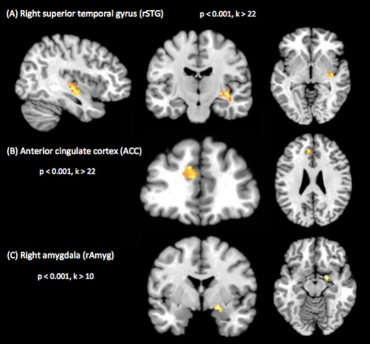
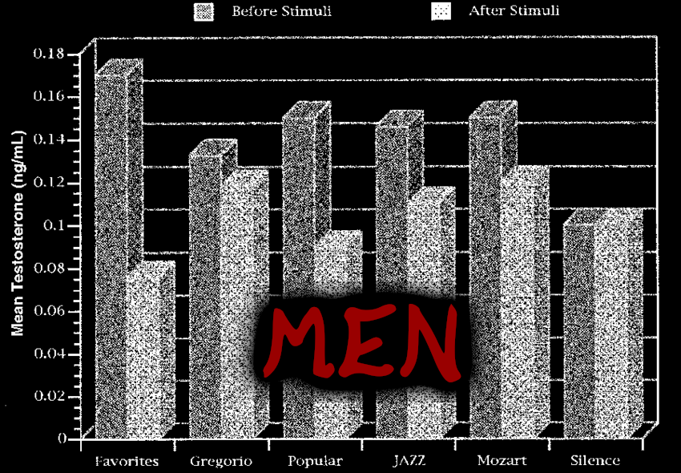
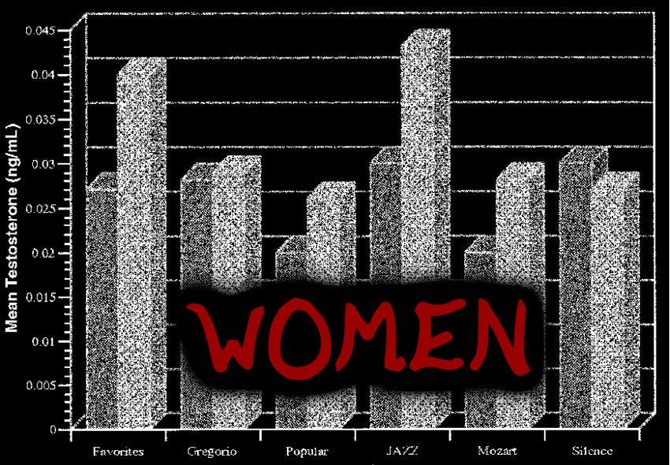
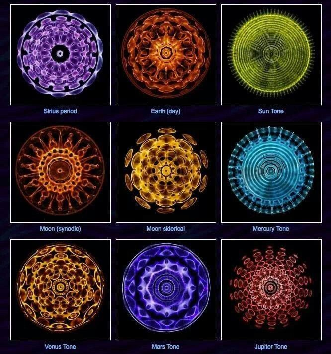

Índice
Sons que podem curar
Todos nós sabemos quão fortemente os sons podem nos afetar. Palavras suaves podem derreter nossos corações, o som estridente de um copo caindo no chão ou o mais doce de todos: os passos trêmulos de uma criança.
Sons que você não pode ouvir
Em primeiro lugar, a ideia de que os sons nos afetam através de nós os ouvirmos, processando-os mentalmente em pensamentos que então nos afetam é algo que devemos deixar de lado.
Deixe-me contar alguns exemplos do contrário para você.
Podemos começar com um estudo recente que mostrou que células humanas de câncer de mama, que obviamente não estão equipadas para processamento auditivo, alteraram significativamente o comportamento e a atividade hormonal com base nos sons.
Outro bom exemplo são os infra-sons; o ouvido humano pode ouvir tudo desde 20Hz para 20.000Hz então a palavra infrassom refere-se a tudo abaixo de 20 Hz.
Se os humanos pudessem ser afetados apenas por nossa experiência subjetiva de sons, não deveríamos ser afetados pelo infra-som.
Dê uma olhada na imagem abaixo, que retrata a ativação do cérebro humano de 12 Hz
Algumas das zonas que estão sendo ativadas na varredura cerebral acima estão envolvidas no processamento auditivo, outras no controle emocional e no sistema nervoso autônomo.
Há muitos estudos em animais no infra-som, com alguns efeitos realmente sombrios, como capacidade de aprendizado reduzida e expressão de proteína regulada negativamente em ratos de 16 Hz [3] e testosterona e libido significativamente reduzidos [4], mas o pior estudo é provavelmente aquele em que eles mostraram que o infra-som induziu fibrose vascular [5].
Existem poucos estudos que comprovem a segurança do infra-som, a maior parte da controvérsia gira em torno do infrator mais flagrante, as usinas eólicas. Nossa melhor chance de uma avaliação justa da segurança de usinas eólicas é uma organização de base formada por pessoas que vivem ao lado de parques eólicos, que está realizando um grande estudo, confira em WindFarmStudy.com
Isso perturbaria muito o status quo se fosse aceito que o infrassom pode ser prejudicial à saúde, mas há muitas evidências que apoiam isso. Se você preferir estudos com grandes conjuntos de dados humanos, houve um concerto duplo britânico onde eles tentaram adicionar 17 Hz e as pessoas sentiram um desconforto significativo [7]
Sempre acho engraçado como os cientistas acadêmicos são obcecados em reduzir as coisas a um grau cômico. Quando eles veem mudanças comportamentais nas pessoas por causa do infrassom, seu instinto é procurar mecanismos ocultos no ouvido que teoricamente poderiam reagir ao infrassom.Suponhamos que uma interação direta do som sobre qualquer célula seja o mecanismo.
Como nota lateral, os efeitos psicológicos do infrassom são às vezes citados como um possível mecanismo para fenômenos paranormais. Há um capítulo na Wikipedia sobre como o infra-som pode causar avistamentos de fantasmas, algo que também vi mencionado nas investigações policiais do infame incidente do Dyatlov Pass
Testosterona
Isso pode surpreendê-lo, mas a música diminui a testosterona nos homens enquanto a aumenta nas mulheres, o que parece ser verdade, independentemente do gênero de música que você toca[8]
 Como você pode ver, a música menos prejudicial em ambos os sexos foram os cantos gregorianos e este é tipicamente o caso: a música espiritual e religiosa é a mais saudável.
Talvez a música possa ser considerada como uma forma de neutralizar e regular a tensão social na sociedade, em vez de algo que inerentemente torna tudo melhor com sua presença incessante.
No entanto, devemos sempre lembrar que qualquer estudo pode nos dar apenas uma pequena partícula do quadro geral, e eu ficaria triste se alguém lesse isso e concluísse que a música é ruim! Por exemplo, neste estudo, os participantes foram *pedidos* para tocar música - pode não ser a mesma coisa quando você espontaneamente consegue e deseja fazê-lo por sua própria vontade.
A questão é que a música PODE ser ruim.
Não precisa ser! A música pode ser boa. O objetivo deste artigo não é assustá-lo, é ajudá-lo a melhorar a qualidade dos sons em sua vida. O que nos leva ao nosso próximo assunto.
440 vs. 432
Você provavelmente já ouviu falar sobre a 'teoria da conspiração' de que 'os poderes constituídos' mudaram a afinação da música de A=432Hz para A=440Hz há cerca de 90 anos para piorar deliberadamente. Não vou especular se essa mudança foi feita propositalmente para nos prejudicar ou não, mas parece ser fato que a música sintonizada em 432Hz é melhor. Existem estudos duplo-cegos que mostram que a música de 432 Hz reduz a frequência cardíaca, a frequência respiratória[9],[10] e o nível de estresse[11]
Outro estudo[12] mostra que a qualidade do sono melhora com música de 432Hz, sem afetar o tempo para adormecer, o que, juntamente com as varreduras de EEG, implica que o mecanismo é um calmante direto em suas ondas cerebrais.
Silêncio
Então, a música pode ser boa e ruim...
O que sabemos sobre o silêncio?
A resposta é que depende do que você compara.
Se a comparação é entre o silêncio e os sons antropogênicos da sociedade moderna: cinco carros passando, uma máquina de lavar louça, a máquina de lavar roupa do vizinho, o zumbido sutil do interruptor de luz.
Se essa for a alternativa, o silêncio vale ouro.
No entanto, pense de onde viemos, antes de despejar concreto por toda parte. Nós vivíamos na natureza, e a natureza é quieta? Não. Nem mesmo é tranquilo quando a calma atinge o pico durante a noite.
Há um momento em que a natureza fica quieta... quando um predador chega assusta a todos. Um silêncio sinistro significa perigo iminente, isso ainda está codificado intuitivamente em nós, algo frequentemente utilizado em filmes de terror. O silêncio pode gerar ansiedade. Esta é uma das maiores razões pelas quais as pessoas ouvem tanta música hoje em dia, como um band-aid em seus níveis de estresse crônico.
Frequências de Cura
Vamos resumir onde estamos. Pessoas sensíveis nos dizem desde os primórdios da música que certas frequências não são apenas mais agradáveis, mas têm um efeito curativo direto no corpo. Como detalho ao longo deste artigo, a ciência está claramente provando que essas pessoas estão certas.
Em um contexto maior, é assim que normalmente parece em qualquer área. A ciência raramente, ou nunca, abre novos caminhos no sentido de ir além do que as pessoas intuitivas diziam o tempo todo. Você pode pensar que 'pessoas intuitivas' é uma frase narcisista para eu me auto-inserir como vencedor, mas essa não é minha intenção: refiro-me à sabedoria de sua bisavó, aos ensinamentos das Sagradas Escrituras e aos hábitos das crianças pequenas antes eles reprimem sua auto-expressão natural. Sou apaixonado em minha crença de que devemos prestar muita atenção quando observamos algo de tais fontes de conhecimento inato.
Esta é uma pequena lista de algumas frequências de cura.
Eles têm fontes diferentes, algumas delas são reconstruídas a partir de passagens bíblicas, outras de pesquisadores de áudio. Seis deles são chamados de frequências de Solfeggio, que é um equívoco frequente para frequências de cura em geral.
174 Hz reduz a dor física, enxaqueca e estresse.
285 Hz ajuda a curar feridas, cortes e células danificadas.
396 Hz libera você da culpa e do medo.
417 Hz remove energia negativa, equilibra seu chakra sacral.
528 Hz aumenta o amor, a clareza da mente e a paz interior profunda.
639 Hz produz proximidade, amizade, compreensão e tolerância.
741 Hz limpa toxinas, protege contra eletromagnetismo.
852 Hz dissolve bloqueios energéticos e reduz o pensamento excessivo.
963 Hz fortalece a intuição e equilibra o chakra da coroa.Apenas uma dessas frequências foi estudada cientificamente, e os resultados são incríveis.
528Hz
Quando dizemos 528 Hz, isso pode se referir a duas coisas diferentes, ou a frequência específica ou a música sintonizada em C = 528 Hz. Isso é comumente referido como a frequência do amor e parece haver uma boa razão para isso! Se houvesse uma "química do amor", seria a ocitocina e temos um estudo mostrando que a música de 528 Hz aumenta significativamente a ocitocina [13]
Lembra como mencionei anteriormente como a maioria das pessoas ouve música sem parar como forma de lidar com o estresse? Vamos dar uma olhada em como a música de 528Hz se compara à música padrão de 440Hz que a maioria das pessoas ouve:
Mencionei anteriormente como a música, mesmo a música 'boa', como Mozart e cantos gregorianos, suprimiu a testosterona de forma confiável. Então, como 528 Hz se compara?
O estudo[14] que examinou a resposta a 528 Hz, na verdade, em comparação com frequências vizinhas para ver se realmente havia algo especial nessa frequência em particular... e aqui estão os resultados:
 Como você vê os gráficos acima, quero que você pense no que eu disse anteriormente sobre as pessoas intuitivas serem um guia confiável para o futuro.
Outra coisa divertida que foi estudada em células humanas é o álcool, pois tocar 528Hz nas células humanas [15] as protegeu contra o álcool, pois a viabilidade celular aumentou em +20% e reduziu o estresse oxidativo em até 100%
320hz
Há um estudo muito interessante onde os pesquisadores usaram diapasões com diferentes frequências para ver se isso afetava caracóis que completavam um labirinto e a diferença era dramática! A frequência mais eficiente foi de 320 Hz, o que diminuiu o tempo de conclusão do labirinto de 16 minutos para 5 minutos e os pesquisadores descreveram os caracóis como extremamente ativos e alertas[16]
Terapia de Frequência
O uso de frequências em um contexto médico moderno remonta ao gênio censurado Dr. Royal Raymond Rife na década de 1930, mas historicamente podemos encontrar inúmeros exemplos de cura através do som. Se você já pisou em uma igreja, então você conhece o efeito profundo dos órgãos da igreja tocando seus tons etéreos. A propósito, não é curioso que eles os chamem de órgãos?
Sons da Natureza
A trilha sonora natural de nossas vidas deve ser os animais que passam o dia, o redemoinho da água, a chuva, o trovão, o vento farfalhando as árvores e assim por diante. Certos sons são ouvidos apenas pela manhã, como um galo cantando pela manhã, enquanto alguns sons são sazonais, como os muitos chamados de acasalamento da primavera.
Na verdade, é muito fácil para você integrar um pouco disso em nossa vida, porque a ciência nos mostrou que uma abstração da natureza é muito melhor do que nada. Por exemplo, se você não tem pássaros felizes cantando do lado de fora da sua janela, então seria melhor você tocar um arquivo .mp3 do que simplesmente viver em silêncio.
Aqui podemos ver o efeito da ansiedade causada por sons da natureza comparado ao silêncio [17]
Não deve ser surpresa que a ansiedade tenha diminuído, mas você esperava que ela fosse quase reduzida pela metade? É assim que nosso ambiente deve soar, é aqui que pertencemos, e voltar para casa está a apenas um clique de distância.
Redução de ruído
Existem duas dimensões para isso, os sons sendo criados e o ambiente em que os sons ressoam.
Até agora, discutimos apenas as ondas sonoras reais, mas a verdade é que você tem maior controle sobre seu ambiente. Sons feios não podem existir na natureza. Tente produzir um som feio em uma floresta, não vai funcionar. Para conseguir algo semelhante em sua casa, você quer ter tantas plantas em casa quanto possível, muita madeira, madeira real e não porcaria colada sintética, tapetes de tecido natural e assim por diante.
Este é um aspecto muito subestimado de sua casa é aconchegante. Imagine que você é uma criança em um refeitório escolar lotado, um exemplo típico de sobrecarga sensorial. Você consegue ouvir a horrível cacofonia de metal e vidro tilintando, uma centena de vozes que ecoam pelas paredes frias?
Compare isso com a natureza. Existe mesmo uma sobrecarga sensorial na natureza? Acho que preferimos experimentá-lo como pura felicidade.
Cimática
Aplicar um movimento de onda a um prato de fluido modulará a gravidade e a inércia dentro do fluido. Se esse efeito for forte o suficiente, o estado normalmente plano do fluido será instável demais para permanecer, e uma forma padronizada surgirá. Dependendo da frequência, a forma será diferente.
Isso é conhecido desde pelo menos o século XVII [23] segue o mesmo princípio de uma frequência específica quebrando um vidro, ou como soldados marchando em ritmo sobre uma ponte podem derrubá-lo.
Dr. Hans Jenny é provavelmente a pessoa que mais descobriu na área de cimática [24] e você pode ler uma coleção de suas descobertas aqui.
A mesma coisa pode ser ilustrada com a areia, que é legal, pois mantém a forma depois que o som cessa, ao contrário dos fluidos.
Considere que todo o seu corpo é feito de água. Sons de volume muito alto criarão padrões como este dentro de suas células, mas mesmo sons de volume baixo terão o mesmo efeito, apenas não são visíveis. Por exemplo, se o padrão de ondas estacionárias na água da sua célula tivesse a forma de uma onda, seria um pouco maior ou menor gravidade e inércia, dependendo de onde no padrão de ondas a célula estaria. É ridículo que a academia convencional considere absurdo que a interrupção dos parâmetros físicos dentro de suas células não tenha efeito sobre elas!
Esta é uma ciência emergente, mas é claro que há muitos segredos para descobrir. Vamos dar uma olhada em alguns exemplos interessantes.
Assim como o som é feito de frequência, a luz também. Se você observar os planetas através de um telescópio, poderá medir as frequências e ilustrar os padrões de frequência tocando-os como sons para a água para criar cimaglifos e também ouvir as frequências planetárias como música.
As cores nos cymaglyphs acima são adicionadas na pós-produção para dar uma melhor "sensação" para a vibração dos planetas. Esta cor é visível a olho nu quando você olha para o planeta em um telescópio. Abaixo você pode ver cymaglyphs para os tons da primeira oitava em um piano.
Como suas células têm movimento dentro delas, elas produzem sons. Esses sons podem ser medidos, e os padrões cimáticos foram fotografados com algo chamado Cymascope[26] e há um estudo muito interessante[27] onde eles ilustraram cimaticamente os sons gravados de células cancerígenas, em comparação com células saudáveis:
A imagem acima não prova muito em si, mas o fato de que cada cymaglyph de célula cancerosa parece feio e cada célula saudável produz algo intrincado, simétrico e bonito. Convido você a ver o conjunto completo de fotos.
Sons de eletricidade
Existe algo chamado Mains Hum que é basicamente o som que a eletricidade em sua casa faz. Dependendo de onde você mora, a corrente elétrica alterna em 50Hz ou 60Hz. Isso gera um som em 100Hz ou 120Hz.
É um som realmente irritante, e se você já ouviu um dimmer ou interruptor de luz "zumbido", então você sabe do que estou falando: você está literalmente ouvindo o som da eletricidade.
Você pode usar isso a seu favor, porque significa que, mesmo que você não tenha um medidor EMF, você pode identificar muitos campos EMF fortes em sua casa.
PS. Não use fones de ouvido Bluetooth, eles são muito ruins para você. Por favor, não coloque nada que emita campos elétricos fortes dentro de seu crânio.
Referências
- [1] Infrasound & Brain Changes
- [2] Discomfort From 17 Hz Concert
- [3] Infrasound & Cognition in Rats
- [4] Infrasound & Testosterone in Rats
- [5] Infrasound & Fibrosis in Rats
- [6] Infrasound & Ghost Sightings
- [7] Effects on Non-Auditory Cells
- [8] Music and Testosterone
- [9] Double-Blinded Study on 440 vs. 432 Hz
- [10] 432 Hz & Heart Rate
- [11] Double-Blinded Study on 440 vs. 432 Hz
- [12] 432 Hz & Sleep Quality
- [13] Endocrine Changes From 528 Hz
- [14] 528 Hz and Testosterone in Rats
- [15] 528 Hz Protects Human Cells From Ethanol
- [16] 320 Hz & Cognition in Snails
- [17] Anxiety & Nature Sounds
- [18] Traffic Noise & Nature Sounds
- [19] Stress Recovery & Nature Sounds
- [20] Stress Recovery & Bird Song
- [21] Music & Post-Operative Pain
- [22] Meta Review: Noise Pollution
- [23] Wikipedia: Cymatics
- [24] Cymatics: A study of Wave Phenomena and Vibration by Dr. Hans Jenny
- [25] Cymatic Planetary Frequencies
- [26] Cymascope.com
- [27] Imaging Cancer and Healthy Cell Sounds in Water by Cymascope